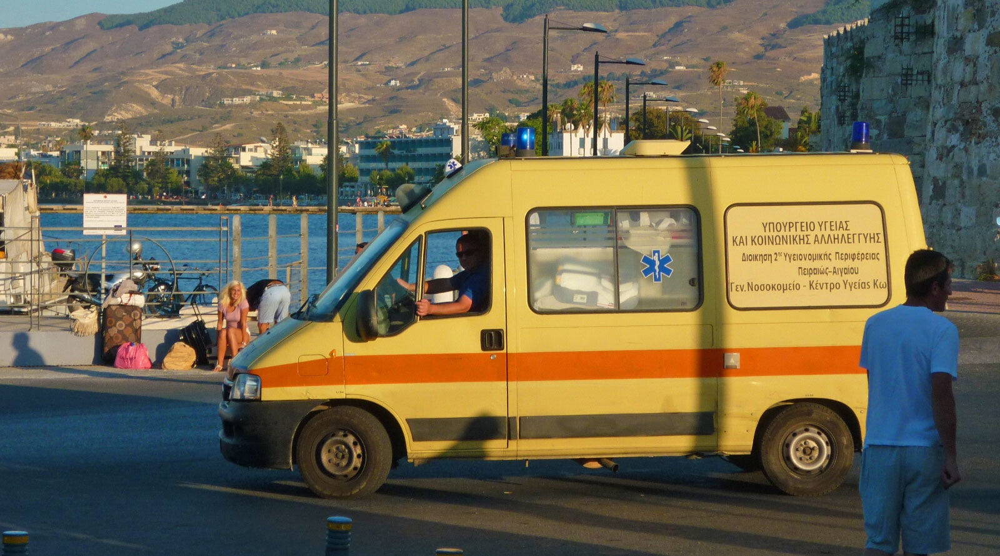

← Noodgevallen
Ziekenhuis
Goed om te weten
Als Grieken iets mankeren gaan ze meestal gelijk naar het ziekenhuis in plaats van naar de huisarts. Reden hiervoor is, dat de kosten van de huisarts niet vergoed worden in tegenstelling tot een ziekenhuis bezoek. Ook als u bij de eerste hulp bent, moet u er rekening mee houden dat voordringen de normaalste zaak van de wereld is. Laat u vooral niet de kaas van het brood eten.

Op Kos
Er bevindt zich op Kos eiland slechts 1 ziekenhuis in Kos-stad en een 1e Hulppost in Antimachia. Het algemeen ziekenhuis (General Hospital of Kos) in de hoofdstad is voor spoedeisende zorg. Voor serieuze medische noodgevallen kunnen patiënten worden overgebracht naar Athene of gerepatrieerd worden naar Nederland.
Ziekenhuis Kos-Stad
(spoedeisende hulp)
Grootste ziekenhuis op het eiland met een spoedeisende hulpafdeling.
Health Centre Antimachia
(Eerste hulp/arts)
Kleine gezondheidspost in het dorp Antimachia met arts en basiszorg
Health Centre Kardamena
Kardamena
Medisch centrum Kefalos
(Eerste hulp/arts)